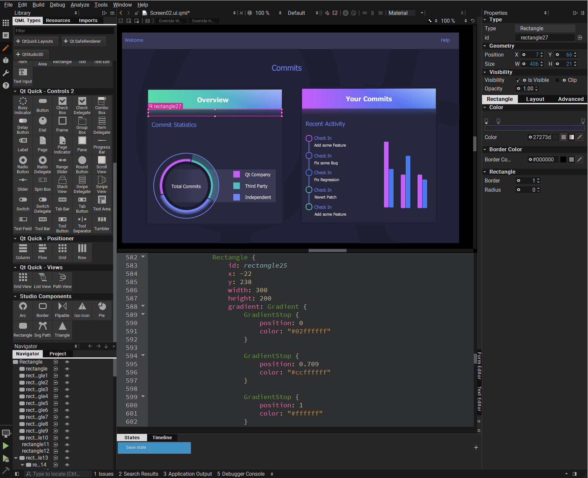
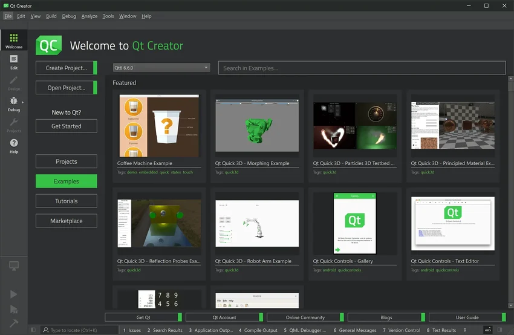
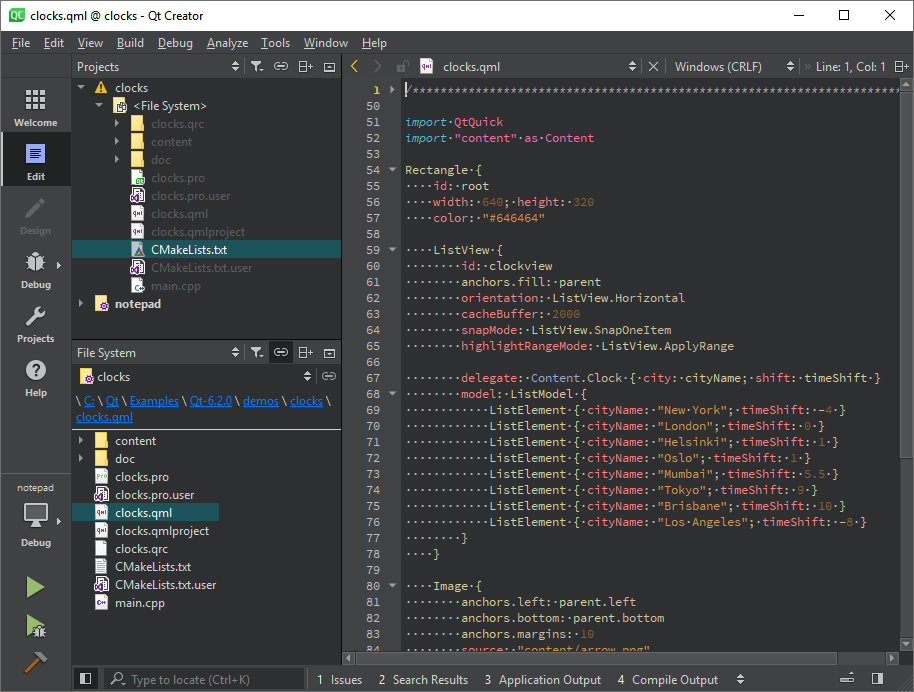
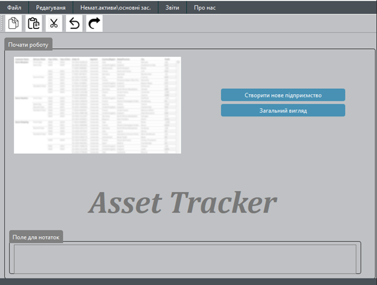
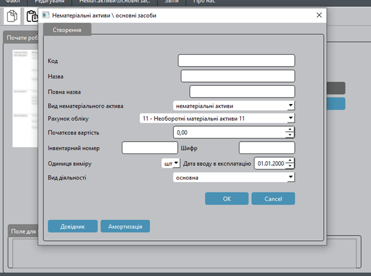
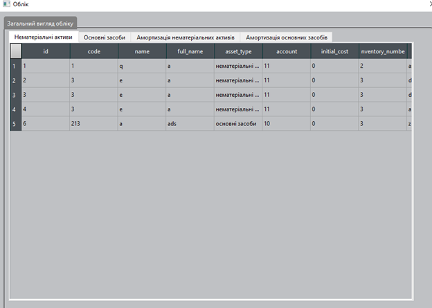

Про технологію Qt
Qt - це кросплатформений фреймворк для розробки програм з графічним інтерфейсом. Він дозволяє створювати програми, які можуть працювати на різних операційних системах, таких як Windows, macOS та Linux, використовуючи один і той же вихідний код.



Важливість обліку нематеріальних активів та основних засобів
Створення програми для обліку нематеріальних активів та основних засобів має велике значення для компаній і організацій. Нематеріальні активи, такі як патенти, бренди, інтелектуальна власність, грають важливу роль в економіці та конкурентоспроможності компаній. Основні засоби, такі як будівлі, обладнання, транспортні засоби, є необхідною частиною виробничого процесу і вимагають ефективного управління та обліку для оптимізації бізнес-процесів та збільшення прибутку.


